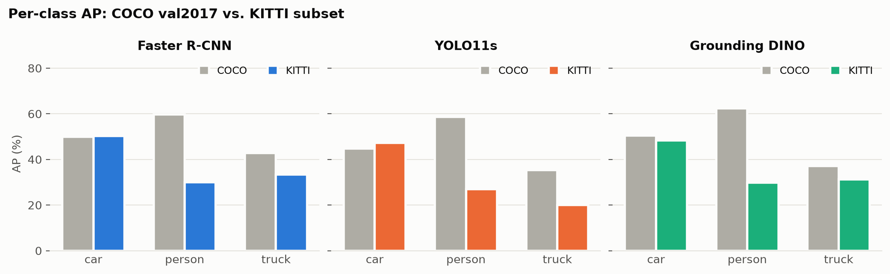
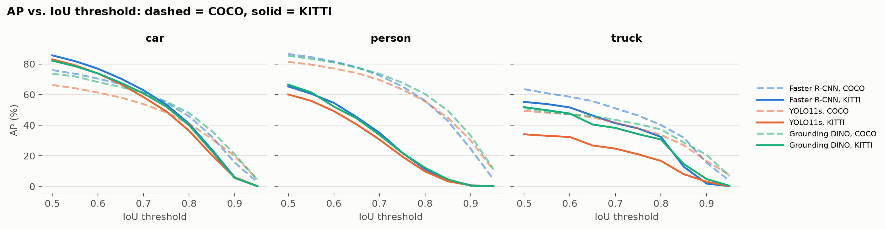
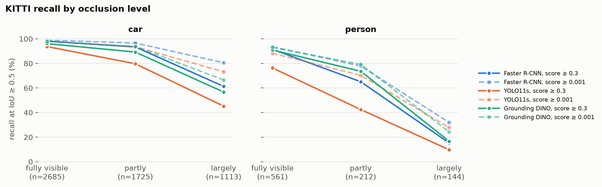
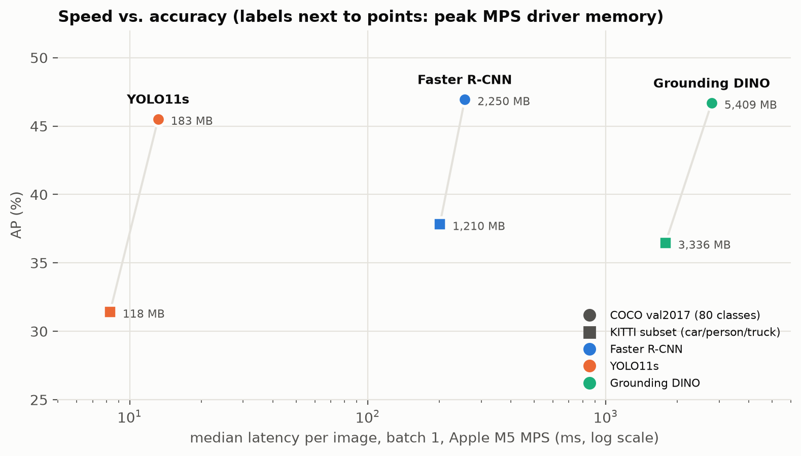
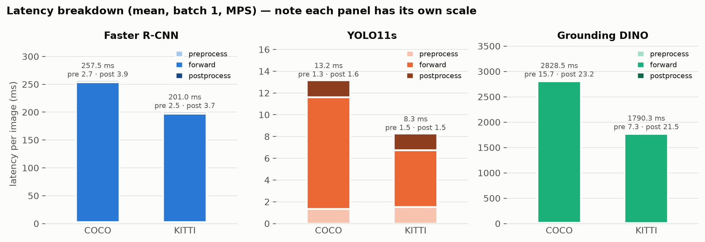
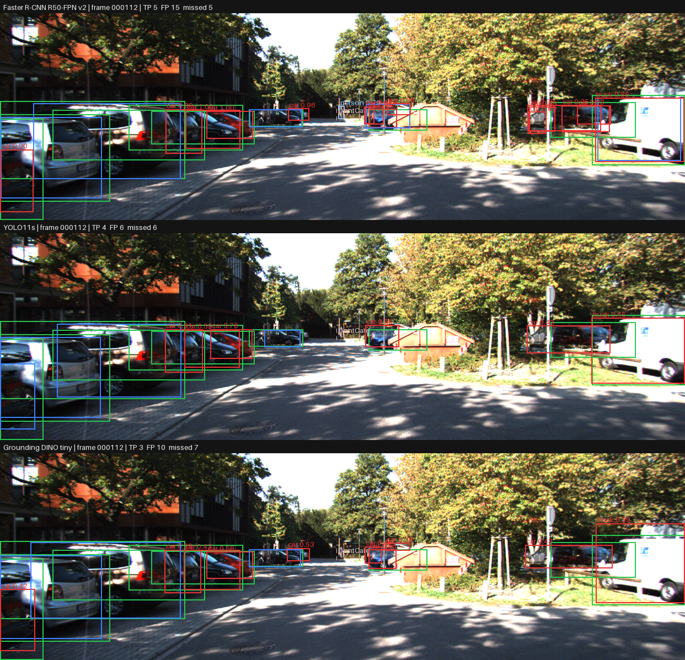
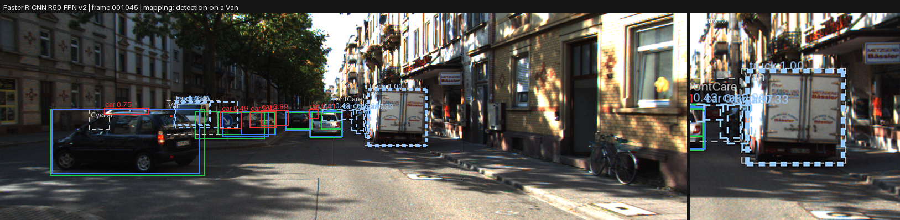
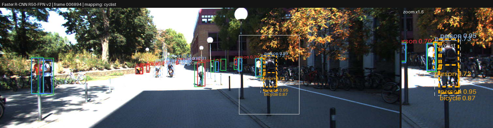

Abstract. This report evaluates three pretrained object detectors from three design families on two datasets without any retraining. The detectors are a two-stage detector (Faster R-CNN), a one-stage detector (YOLO11s) and an open-vocabulary detector (Grounding DINO tiny). The datasets are the COCO validation set and a 1,500-frame subset of the KITTI driving benchmark. All accuracy numbers come from one evaluator. On COCO the three detectors lie within 1.4 AP of each other (45.5–46.9), while their latency on an Apple M5 GPU spans a factor of about 200 (13 ms to 2.8 s per image). On KITTI's car, person and truck classes, AP drops by 26–32%. The loss is concentrated in pedestrians and in tight localization: car AP does not drop at all, whereas pedestrian AP halves while recall at IoU 0.5 stays at 74–80%. Occlusion is the main cause of missed objects. Inspection suggests that annotation conventions (box extent, class definitions) explain part of the gap. Two ablations show that YOLO11s regains 4.5 AP on KITTI at 1280 px input, and that one Grounding DINO prompt instead of four is 3.8× faster. With KITTI-native class names, Grounding DINO reaches 40.7 AP and also detects vans and cyclists, which the closed-set models cannot represent.
An autonomous system rarely trains its perception from scratch. More often it starts from a detector pretrained on a large generic dataset, which makes the size of the gap between that dataset and the deployment domain a practical engineering question. The Common Objects in Context (COCO) dataset contains everyday photographs of 80 object classes [1]. The KITTI benchmark, from the Karlsruhe Institute of Technology and Toyota Technological Institute, instead records street scenes from a car-mounted camera, with its own class definitions and labeling rules [2]. A detector that scores well on the first is therefore not guaranteed to score well on the second.
This study measures that gap for three detector designs and asks three questions: (1) how much accuracy each design loses from COCO to KITTI, and why; (2) what the accuracy costs in latency and memory on a single consumer GPU; and (3) whether an open-vocabulary detector can use KITTI's own class names to recover accuracy and detect classes that COCO lacks. Sections 2–4 describe the models, data, setup and commands. Section 5 reports the main results, Sections 6–8 present three analyses, Section 9 examines failure cases, and Section 10 concludes.
The three detectors differ in how they turn an image into boxes, which is why they were chosen. Faster R-CNN (region-based convolutional neural network) uses a region proposal network (RPN) to score preset anchor boxes on a ResNet-50 feature pyramid network (FPN), then classifies and refines about a thousand proposals in a second stage [3], [4]. The torchvision "v2" weights keep this architecture but use an improved training recipe [5], [11]. YOLO11s (You Only Look Once, version 11, small model) predicts box edges and class scores for every grid cell in one pass, without anchors or a proposal stage [6], [7]. Grounding DINO receives a text prompt along with the image and fuses a Swin Transformer image backbone with a Bidirectional Encoder Representations from Transformers (BERT) text encoder [8], [10], [14]. Its decoder, in the style of the DEtection TRansformer (DETR), uses 900 learned queries, each scored against every word of the prompt [9]. The checkpoint was loaded through the Hugging Face Transformers library [12]. Only the last of the three designs can be given new class names at test time.
| Detector | Family | Checkpoint | Params | Network input |
|---|---|---|---|---|
| Faster R-CNN R50-FPN v2 | two-stage, anchor-based | torchvision COCO_V1 | 43.7 M | short side 800, long ≤ 1333 |
| YOLO11s | one-stage, anchor-free | Ultralytics yolo11s.pt | 9.5 M | long side 640, letterbox |
| Grounding DINO tiny | open-vocabulary, query-based | HF IDEA-Research/grounding-dino-tiny | 172.3 M | short side 800, long ≤ 1333 |
COCO val2017 provides 5,000 images and is scored on all 80 classes. For KITTI, the test labels are private, so a fixed random subset of 1,500 frames was drawn once (seed 42) from the 7,481 labeled training frames, and the frame list is stored in the repository. KITTI's classes were mapped onto COCO's own category IDs. The subset holds 6,822 scored boxes (5,687 car, 936 person, 199 truck) and 3,363 ignore regions (2,198 DontCare, 564 Van, 306 Cyclist, 196 Misc, 99 Tram).
| KITTI type | Mapped to | Reason |
|---|---|---|
| Car / Truck | car / truck | same class in COCO |
| Pedestrian, Person_sitting | person | COCO has one person class |
| Van | ignore (sensitivity test: car) | COCO has no van class; models call vans car or truck |
| Cyclist | ignore (sensitivity test: person) | COCO splits a cyclist into person + bicycle |
| Tram, Misc, DontCare | ignore | no COCO equivalent, or unlabeled area |
iscrowd=1): a detection inside it is neither a true nor a false positive.The ignore policy keeps the comparison fair to detectors limited to COCO's 80 class names, which include no "van" or "cyclist". Section 6.3 measures how much the score depends on this choice.
All runs used one machine and one software stack, recorded automatically in env.txt: an Apple M5 with 10 CPU cores and 16 GB of unified memory, running macOS 26.5.2, Python 3.11.18, PyTorch 2.15.0, torchvision 0.29.2, Ultralytics 8.4.214, Transformers 5.23.0 and pycocotools 2.0.11. Every model ran on the graphics processing unit (GPU) through PyTorch's Metal Performance Shaders (MPS) backend, and no CPU fallback was needed.
COCOeval on bounding boxes [13]. It reports average precision (AP) averaged over intersection over union (IoU) thresholds 0.50–0.95, AP50/AP75 at a single threshold, APS/M/L by object size, and average recall over 100 detections (AR100). Score threshold 0.001, at most 100 detections per image. On KITTI every model is asked for all 80 COCO classes, and other classes are dropped afterwards.The repository's README.md lists every command in run order, so the results can be reproduced from a clean clone without any wrapper script. Table 3 summarizes them; M ∈ {faster_rcnn, yolo11s, gdino} and D ∈ {coco, kitti}. Every run writes its full configuration (model, checkpoint, input size, thresholds, device, versions) to results/<run>/config.json, and the commands actually run are recorded in logs/commands.log.
| Step | Command (from the repository root, inside .venv) | Output |
|---|---|---|
| Environment | python3.11 -m venv .venv; pip install -r requirements.txtexport PYTORCH_ENABLE_MPS_FALLBACK=1; python scripts/record_env.py | env.txt |
| Data checks | python scripts/check_coco.py; python scripts/check_kitti.py | 5,000 / 7,481 images |
| KITTI ground truth | python -m src.datasets.kitti_to_coco | kitti_subset_coco.json |
| Inference | python -m src.eval.run_inference --model M --dataset D [--limit 200] | predictions.json |
| Evaluation | python -m src.eval.coco_eval --run results/M_D | metrics.json |
| YOLO cross-check | python scripts/yolo_crosscheck.py | crosscheck.md |
| Speed benchmark | python -m src.eval.benchmark --model M --dataset D | benchmark.json |
| Label-policy variants | python -m src.datasets.kitti_to_coco --mapping configs/kitti_mapping_van_car.yaml --out ... | alternative GT |
| Open vocabulary | python -m src.eval.run_inference --model gdino --dataset kitti_native [--rename pedestrian=person] | native-prompt runs |
| Ablations | ... --model yolo11s --dataset kitti --set imgsz=1280... --model gdino --dataset coco --limit 200 --set chunk_size=80 | ablation runs |
| Analyses, figures | python -m src.analysis.{tables,generalization,speed_accuracy,plots,open_vocab,failures} | tables, figures |
README.md). Settings live in configs/models.yaml and configs/kitti_mapping*.yaml; --set KEY=VALUE overrides one model setting for a run, and --rename CLASS=TEXT changes the prompt wording of one class.All three detectors reproduce their published COCO accuracy, which confirms the pipeline before any comparison. Faster R-CNN reaches 46.9 AP against 46.7 in torchvision's model card [11], YOLO11s 45.5 against 47.0 [7], and Grounding DINO 46.7 against 48.4 for the same Swin-T checkpoint [8]. As a further check, YOLO11s was also scored by Ultralytics' own validator. Our pipeline is 0.7 AP below that validator's number. About 0.6 AP of the gap to pycocotools scoring the validator's predictions comes from its multi-label NMS, which can keep one box under several classes; our pipeline keeps the deployment default of one class per box. No result differs from its reference by more than 1.7 AP.
| Detector | Dataset | AP | AP50 | AP75 | APS | APM | APL | AR100 | Latency (ms) | FPS |
|---|---|---|---|---|---|---|---|---|---|---|
| Faster R-CNN | COCO | 46.9 | 67.9 | 51.4 | 30.9 | 50.8 | 60.3 | 63.0 | 255.9 | 3.9 |
| YOLO11s | COCO | 45.5 | 62.0 | 49.2 | 27.6 | 50.1 | 62.5 | 60.2 | 13.2 | 75.9 |
| Grounding DINO | COCO | 46.7 | 63.2 | 50.4 | 32.5 | 49.9 | 61.3 | 66.3 | 2786.6 | 0.4 |
| Faster R-CNN | KITTI | 37.8 | 68.7 | 37.8 | 25.2 | 35.9 | 47.8 | 55.1 | 201.0 | 5.0 |
| YOLO11s | KITTI | 31.4 | 59.0 | 29.8 | 21.3 | 29.1 | 43.5 | 45.8 | 8.3 | 120.8 |
| Grounding DINO | KITTI | 36.5 | 66.8 | 36.1 | 29.8 | 34.0 | 46.6 | 54.3 | 1781.7 | 0.6 |
On COCO, accuracy barely separates the three designs, but on KITTI it does. Faster R-CNN leads on KITTI by 1.3 AP over Grounding DINO and by 6.4 AP over YOLO11s.
To compare like with like, COCO was re-evaluated on car, person and truck only. On these three classes AP falls from COCO to KITTI by 12.9 points for Faster R-CNN (50.8 → 37.8, −26%), 14.9 for YOLO11s (46.3 → 31.4, −32%) and 13.5 for Grounding DINO (49.9 → 36.5, −27%). The loss is far from uniform, and its pattern points to specific causes.

Car AP is essentially unchanged across datasets (−2.1 to +2.5 points), whereas person AP halves for every model (59.6 → 29.9, 58.6 → 27.0 and 62.3 → 29.7). Truck AP falls by 6–15 points, but KITTI contains only 199 truck boxes. The pedestrian loss is mostly a localization effect, as Fig. 2 shows. For Faster R-CNN, person AP50 falls from 86.5 to 65.3 but person AP75 falls from 65.3 to 22.0. The other two models show the same pattern: AP75 loses about two thirds and AP50 about a quarter. Car AP50 even rises on KITTI (76.0 → 85.6 for Faster R-CNN) while car AP75 stays level. Recall at IoU 0.5 confirms that the pedestrians are found, at 74–80% when every detection is kept, and their median height is 97 px, so most are not small. The evidence therefore points to boxes that do not match KITTI's pedestrian boxes at strict IoU, rather than to pedestrians the models fail to see.

AP drops at every object size, and medium and large objects lose the most (Faster R-CNN APM 57.9 → 35.9, APL 67.4 → 47.8). Grounding DINO is the most robust on small objects (APS 33.5 → 29.8, against 36.3 → 25.2 for Faster R-CNN). Occlusion matters more than size. A small custom matcher assigned detections greedily in score order at IoU ≥ 0.5 and counted the KITTI boxes found at score ≥ 0.3 (Fig. 3). Car recall falls from 93.7–98.1% when fully visible to 45.2–61.3% when largely occluded, and person recall falls from 76.3–91.4% to 9.7–16.7%. Median car height barely changes across the occlusion levels (49/43/45 px), so this is not a size effect in disguise. YOLO11s is the most sensitive at this threshold, but keeping all its detections raises its partly-occluded pedestrian recall from 42.5% to 70.3%. Its occluded detections therefore exist but receive low scores.

Scoring the same saved predictions against alternative ground truth shows that the KITTI number depends on the policy. Treating Van as car lowers car AP by only 1.7–2.8 points but truck AP by 9.4–11.2, because the models label many vans "truck" (363 such boxes for Faster R-CNN at score ≥ 0.3). Under the default policy those boxes are neutral; under Van: car they become truck false positives. Treating Cyclist as person lowers person AP by 5.8–7.8 points. A KITTI score for detectors that use COCO's label set is therefore partly a statement about the label mapping, which must be reported along with it.


The accuracy differences are small next to the cost differences. On COCO, Faster R-CNN buys 1.4 AP over YOLO11s at 19× the latency (256 vs. 13 ms) and 12× the peak memory (2.2 GB vs. 183 MB). Grounding DINO is another 11× slower than Faster R-CNN and peaks at 5.4 GB, with 0.2 AP less. On the fixed COCO classes, Faster R-CNN therefore dominates Grounding DINO on both datasets, while YOLO11s and Faster R-CNN each stay best for their own latency. The forward pass accounts for 97–99% of the time for the two large models. Pre- and postprocessing are 22% (COCO) and 37% (KITTI) of YOLO11s's time. The measured postprocessing time is an upper bound, because the mAP setting (score threshold 0.001) leaves many boxes for NMS.
Two design choices explain most of the latency. Input size is the first. Faster R-CNN and Grounding DINO upscale a typical COCO image from 0.28 to about 0.9 megapixels, while YOLO11s works near native resolution (0.30 Mpx), and its forward time tracks input pixels closely (34–36 ms per megapixel). Every model is faster on KITTI because each sees fewer input pixels there. YOLO11s, however, downscales KITTI's wide frames to 640×224, about a third of the original pixels, which coincides with its largest KITTI accuracy drop. The second is prompt chunking. Grounding DINO's BERT text encoder takes only about 33 ms per image (1.2–1.9% of the forward time), but splitting the 80 COCO names into 4 prompts runs the image backbone and decoder 4 times.
| Ablation | Setting | AP | APM | truck AP | Latency (ms) | Peak mem. (MB) |
|---|---|---|---|---|---|---|
| YOLO11s on KITTI | input 640 (main results) | 31.4 | 29.1 | 20.0 | 8.3 | 118 |
| input 1280 | 35.9 | 35.4 | 28.1 | 16.5 | 1,102 | |
| Grounding DINO, COCO (first 200 images) | 4 prompts × 20 classes (main results) | 51.8 | – | – | 2,787 | 5,409 |
| 1 prompt × 80 classes (195 tokens) | 53.1 | – | – | 740 | 5,384 |
Both explanations hold up. Doubling YOLO11s's input adds 4.5 AP on KITTI (most of it on medium objects and trucks) and still runs 12× faster than Faster R-CNN. A single Grounding DINO prompt is 3.8× faster and slightly more accurate, so the main results understate that model's speed.
Grounding DINO was run again on the KITTI frames with the KITTI-native prompt car . van . truck . pedestrian . cyclist .. The predictions were scored in two ways: mapped back to the default car/person/truck ground truth, and against a native ground truth in which Van and Cyclist are real classes.
| Mapped to car/person/truck | AP | car | person | truck |
|---|---|---|---|---|
| COCO-80 prompt (Table 4) | 36.5 | 48.4 | 29.7 | 31.3 |
| KITTI prompt | 39.0 | 50.8 | 22.1 | 44.3 |
| KITTI prompt, "person" | 40.7 | 49.3 | 28.0 | 44.8 |
| Faster R-CNN (closed-set) | 37.8 | 50.2 | 29.9 | 33.3 |
| Native classes | car | van | truck | ped. | cyclist |
|---|---|---|---|---|---|
| AP | 48.4 | 24.7 | 36.2 | 18.1 | 10.9 |
| AP50 | 81.0 | 36.9 | 54.5 | 37.0 | 27.9 |
| GT boxes | 5,687 | 564 | 199 | 936 | 306 |
| ped. as "person" | pedestrian AP 24.0 | ||||
| ped. as "walking person" | pedestrian AP 12.0 | ||||
Changing only the prompt moves Grounding DINO from 36.5 to 39.0 AP, above Faster R-CNN's 37.8, and the gain comes mostly from trucks (+13.0). With five classes instead of eighty, a truck no longer competes with bus, car or train for its score, which is a plausible explanation that this study did not isolate. The short prompt also runs in 385 ms per image instead of 1,730 ms. In the native evaluation the model detects vans (24.7 AP) and cyclists (10.9 AP) zero-shot. Faster R-CNN and YOLO11s cannot represent either class. Wording, however, is a fragile control. Pedestrian AP is 18.1 with "pedestrian", 24.0 with "person" and 12.0 with "walking person", a factor of two from one phrase. Because these wordings were compared on the evaluation frames themselves, the 40.7 AP figure is an optimistic upper bound rather than a held-out result.
Every KITTI detection at score ≥ 0.3 was classified with the same matcher as true positive, duplicate, inside an ignore region, or false positive. False positives were further split into wrong class, poor localization and background. Missed ground-truth boxes were recorded with their occlusion and size.
| At score ≥ 0.3 (6,822 KITTI boxes) | Faster R-CNN | YOLO11s | Grounding DINO |
|---|---|---|---|
| Missed boxes (of which occluded / small) | 961 (768 / 135) | 1,715 (1,266 / 484) | 1,127 (872 / 162) |
| False positives (score > 0.5) | 5,538 (3,487) | 1,008 (366) | 3,264 (564) |
| FP split: background / localization / wrong class | 63% / 34% / 3% | 33% / 62% / 4% | 62% / 35% / 3% |
| Duplicate boxes on matched objects | 95 | 149 | 18 |
| Van regions labeled "truck" | 363 | 158 | 360 |
| Cyclists given both a person and a bicycle box (of 306) | 146 | 67 | 208 |
Four failure modes stand out. First, occlusion: 74–80% of all missed boxes are partly or largely occluded, for every model. Second, confidence: Faster R-CNN produces 3,487 false positives above 0.5, almost ten times YOLO11s's 366, for a 6.4-point AP advantage. Its scores are therefore poorly suited to a fixed operating threshold without recalibration. Third, label definitions. Fig. 7 shows a box truck that KITTI labels Van and Faster R-CNN calls "truck" with score 1.00, and the white van on the right of Fig. 6 is labeled Car. Fig. 8 shows a KITTI Cyclist, which COCO's class set describes as a person plus a bicycle, so neither box matches the single cyclist box. Fourth, box extent (Fig. 6). For heavily occluded parked cars, KITTI's boxes extend behind the cars in front, while every detector boxes only the visible part, which yields IoU below 0.5, a false positive and a missed box at once. This last observation comes from inspected frames and was not measured systematically, but it is consistent with the high-IoU losses of Section 6.1.



The three pretrained detectors are nearly equal on COCO and clearly unequal on a driving benchmark. On COCO they sit within 1.4 AP, while latency spans two orders of magnitude, from 13 ms for YOLO11s to 2.8 s for Grounding DINO with four prompt chunks. On KITTI, all three lose 26–32% of their AP on the shared classes. The loss is concentrated in pedestrians, strict IoU thresholds and occluded objects, while cars transfer without loss. Several observations indicate that part of this gap reflects how the two datasets define boxes and classes, not only what the models fail to see: high recall at IoU 0.5, wide ground-truth boxes on occluded cars, vans labeled as trucks and cars, and cyclists split into two COCO classes. Reported KITTI scores for detectors that use COCO's label set should therefore always state their label mapping and IoU threshold.
For practice, the results suggest a clear choice. On this hardware, YOLO11s with a 1280 px input is the best real-time option measured: 35.9 AP on KITTI at 16.5 ms, within 1.9 AP of Faster R-CNN at about a twelfth of its latency. Faster R-CNN gives the best fixed-class accuracy among the planned settings, but its many confident false positives would need score recalibration. Grounding DINO with a task-specific prompt was the most accurate (39.0–40.7 AP) and the only model able to detect vans and cyclists. It still needs 385 ms per image, and its accuracy depends strongly on the wording of each class name.
Limitations. No model was fine-tuned. The KITTI subset is 1,500 frames, with only 199 trucks. MPS timings, including a one-off kernel compilation for each new input shape (141 vs. 13.5 ms per image for YOLO11s), are not equivalent to timings on an NVIDIA GPU. The prompt wordings were compared on the evaluation data. The box-extent explanation rests on inspected frames rather than a systematic measurement. Future work should fine-tune on held-out KITTI frames, measure the box-extent effect directly by comparing predicted and ground-truth box edges, and repeat the timings on a CUDA GPU.
[1] T.-Y. Lin, M. Maire, S. Belongie, J. Hays, P. Perona, D. Ramanan, P. Dollár, and C. L. Zitnick, "Microsoft COCO: Common objects in context," in Proc. Eur. Conf. Comput. Vis. (ECCV), 2014, pp. 740–755.
[2] A. Geiger, P. Lenz, and R. Urtasun, "Are we ready for autonomous driving? The KITTI vision benchmark suite," in Proc. IEEE Conf. Comput. Vis. Pattern Recognit. (CVPR), 2012, pp. 3354–3361.
[3] S. Ren, K. He, R. Girshick, and J. Sun, "Faster R-CNN: Towards real-time object detection with region proposal networks," in Proc. Adv. Neural Inf. Process. Syst. (NeurIPS), 2015, pp. 91–99.
[4] T.-Y. Lin, P. Dollár, R. Girshick, K. He, B. Hariharan, and S. Belongie, "Feature pyramid networks for object detection," in Proc. IEEE Conf. Comput. Vis. Pattern Recognit. (CVPR), 2017, pp. 2117–2125.
[5] Y. Li, S. Xie, X. Chen, P. Dollár, K. He, and R. Girshick, "Benchmarking detection transfer learning with vision transformers," arXiv:2111.11429, 2021.
[6] J. Redmon, S. Divvala, R. Girshick, and A. Farhadi, "You only look once: Unified, real-time object detection," in Proc. IEEE Conf. Comput. Vis. Pattern Recognit. (CVPR), 2016, pp. 779–788.
[7] G. Jocher and J. Qiu, "Ultralytics YOLO11," 2024. [Online]. Available: https://github.com/ultralytics/ultralytics
[8] S. Liu, Z. Zeng, T. Ren, F. Li, H. Zhang, J. Yang, C. Li, J. Yang, H. Su, J. Zhu, and L. Zhang, "Grounding DINO: Marrying DINO with grounded pre-training for open-set object detection," in Proc. Eur. Conf. Comput. Vis. (ECCV), 2024. Model zoo: https://github.com/IDEA-Research/GroundingDINO
[9] N. Carion, F. Massa, G. Synnaeve, N. Usunier, A. Kirillov, and S. Zagoruyko, "End-to-end object detection with transformers," in Proc. Eur. Conf. Comput. Vis. (ECCV), 2020, pp. 213–229.
[10] J. Devlin, M.-W. Chang, K. Lee, and K. Toutanova, "BERT: Pre-training of deep bidirectional transformers for language understanding," in Proc. NAACL-HLT, 2019, pp. 4171–4186.
[11] TorchVision maintainers and contributors, "TorchVision: PyTorch's computer vision library," 2016. [Online]. Available: https://github.com/pytorch/vision
[12] T. Wolf et al., "Transformers: State-of-the-art natural language processing," in Proc. Conf. Empirical Methods Natural Lang. Process.: Syst. Demonstrations (EMNLP), 2020, pp. 38–45.
[13] COCO Consortium, "COCO API (pycocotools)." [Online]. Available: https://github.com/cocodataset/cocoapi
[14] Z. Liu, Y. Lin, Y. Cao, H. Hu, Y. Wei, Z. Zhang, S. Lin, and B. Guo, "Swin Transformer: Hierarchical vision transformer using shifted windows," in Proc. IEEE/CVF Int. Conf. Comput. Vis. (ICCV), 2021, pp. 10012–10022.